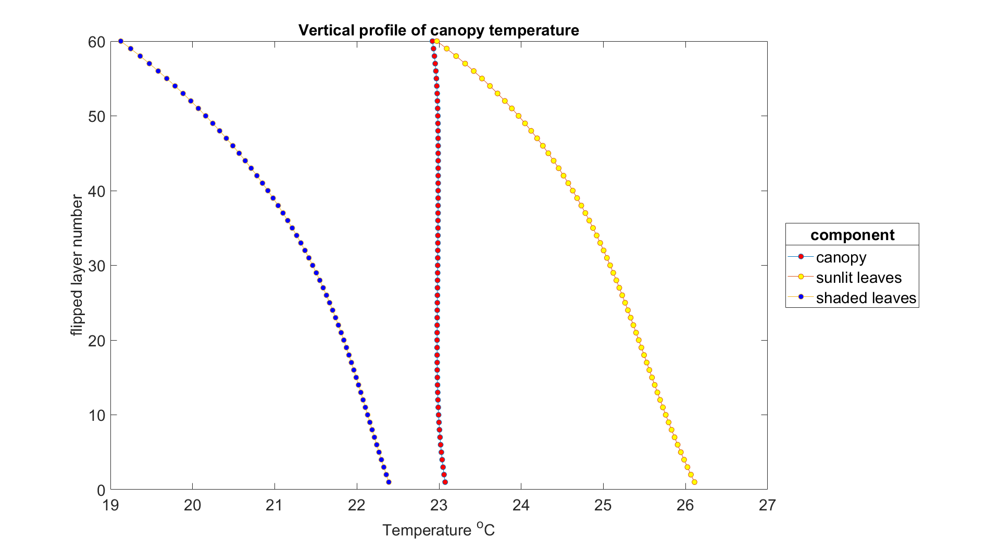

Vertical profiles¶
options.calc_vert_profiles & options.calc_ebal
Definition¶
We assume, it’s not needed.
SCOPE¶
SCOPE represents canopy as 60 elementary layers of leaves of two types: sunlit (then we account for leaf inclinations) and shaded.
Components of energy balance, temperature and fluorescence can be calculated for each layer with options.calc_vert_profiles

Warning
To produce this graph profiles were flipped so that soil is layer #0 and first canopy layer is layer #1.
This way top of canopy is actually at the top of the graph (layer #60).